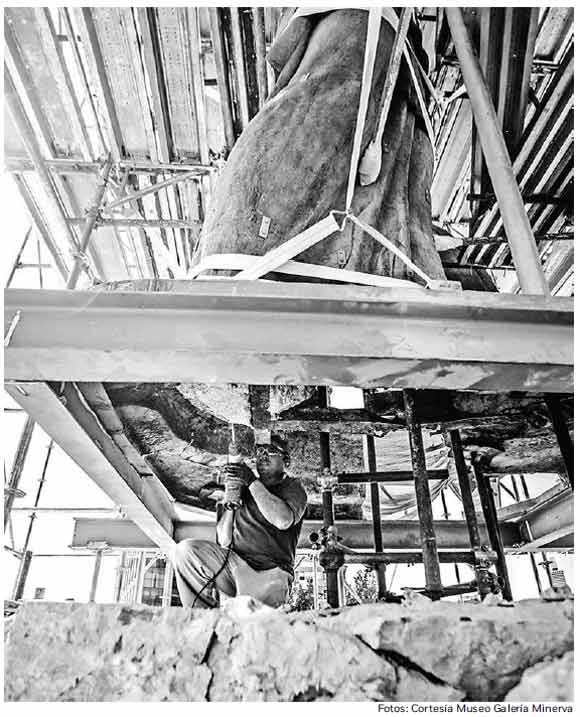

La Minerva, orgullo y símbolo de fortaleza en el corazón de Guadalajara.
Conoce su HistoriaConstruida en 1957, La Minerva representa la justicia, sabiduría y fortaleza de Guadalajara.
"Justicia, Sabiduría y Fortaleza custodian a esta leal ciudad."
Encuentra La Minerva en el corazón de Guadalajara y planifica tu visita con nuestras recomendaciones.
La Minerva no es solo una estatua, es un símbolo de la identidad tapatía, siendo el lugar de celebración de momentos inolvidables para los habitantes de Guadalajara.
“Un monumento que realmente refleja la fortaleza de Guadalajara.”
“La Minerva es el alma de la ciudad.”